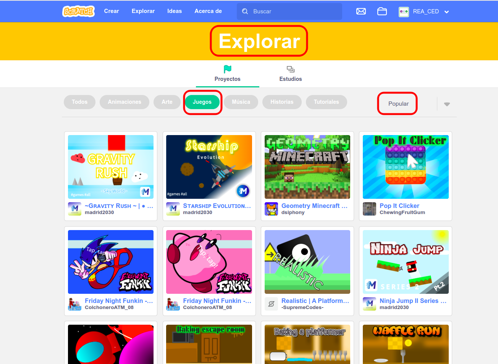
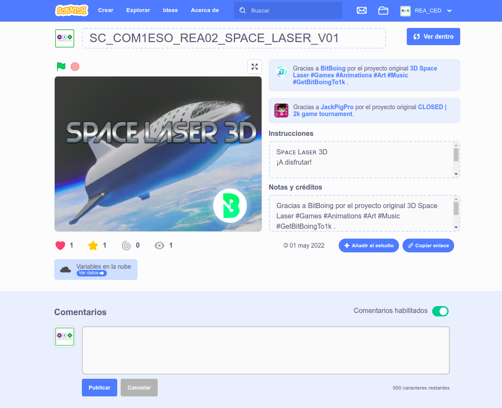
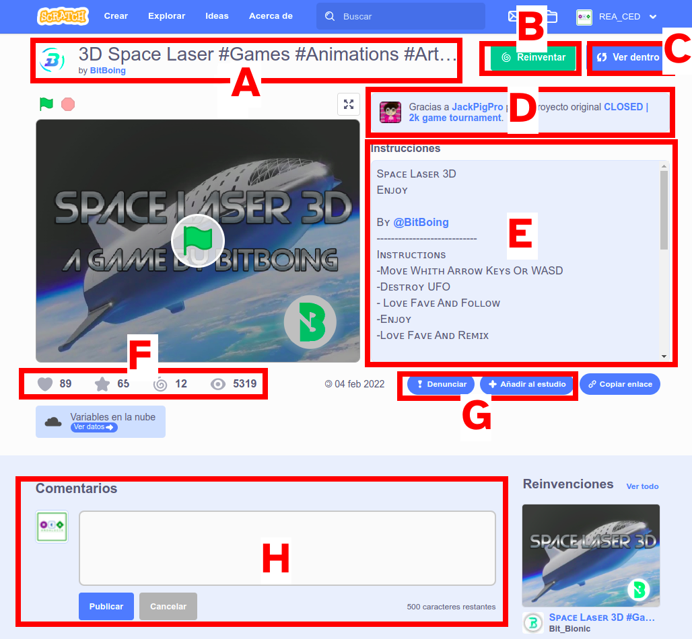
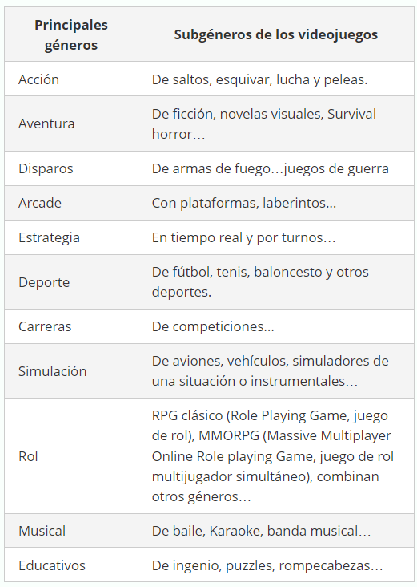
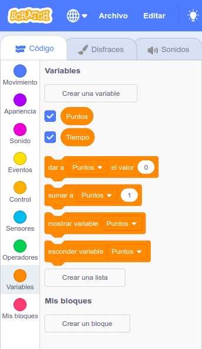

Para alcanzar el reto propuesto de crear nuestro primer videojuego, vamos a utilizar Scratch que emplea un lenguaje de programación visual basado en bloques de código.
Para alcanzar el reto propuesto de crear nuestro primer videojuego, vamos a utilizar Scratch que emplea un lenguaje de programación visual basado en bloques de código.
Veremos cómo extraer información de un proyecto en Scratch y descubriremos los tipos de videojuegos y veremos cuales se pueden hacer con Scratch.
Finalmente, vamos a explorar y modificar algunos videojuegos realizados con Scratch. Descubriremos cómo funcionan y analizaremos sus elementos.
¿Has utilizado Scratch para crear juegos? Si no es así, no te preocupes ya que empezaremos desde cero.
Disfruta con los videojuegos de Scratch
Por parejas vamos a visitar el portal de Scratch y a explorar algunos de los videojuegos que hay hechos en él. Disfruta probando algunos de los juegos más populares en Scratch y descubre cómo extraer información importante de ellos.
Para explorar juegos visita el apartado explorar y dale a juegos.

Busca en Scratch juegos, pruébalos, y apunta los que más te gusten.
Al final, comparte los videojuegos que más te gusten con tus compañeras y compañeros.
Extraemos información de un juego de Scratch
Por parejas vamos a intentar extraer información importante de los videojuegos del portal Scratch.
Piensa, busca y relaciona cada uno de los siguientes apartados con distinta información sobre este videojuego, con cada una de las zonas de la portada de su proyecto de donde se puede extraer.
- ¿Cómo podemos saber el nombre del juego y su programador?
- ¿Dónde puedes saber cómo son las instrucciones del juego? Y la información sobre los creadores.
- ¿Cómo podemos saber cuántas visitas ha tenido un juego?¿Y cuántas veces ha sido reinventado?
- ¿Cómo podemos saber si un juego es original o reinventado?
- ¿Dónde puedo reinventar un juego?
- ¿Dónde puedo ver cómo está hecho?, ¿cómo está programado?.
- Prueba a dejar un comentario positivo en un juego que te haya gustado.
- Y ¿dónde para poder compartirlo, añadir a tu estudio o denunciarlo por contenido inapropiado?
Elabora en tu libreta un croquis de la portada de un proyecto en Scratch, parecido a la siguiente imagen.

Identifica y señala en el croquis con una letra, cada una de las zonas de donde se puede extraer la información enumerada.
Relaciona cada una de estas letras con el número de apartado anterior de información, de tal forma que correspondan entre sí, la información con la zona en la que se puede extraer.
Finalmente, pon en común con tus compañeras o compañeros de clase lo que habéis realizado.
Lumen dice ¿Necesitas ayuda para empezar esta actividad?
Ten presente que se pide relacionar los números de los apartados de información que se puede extraer de la portada de los proyectos en Scratch con cada una de las zonas de donde se puede extraer dicha información, las letras que identifican los distintos recuadros de donde se puede extraer dicha información.
Para ayudarte, en la siguiente imagen tienes destacas con un recuadro rojo y una letra cada una de las zonas de donde se puede extraer la información de todos los apartados anteriores.
Ya solo debes relacionar cada una de las letras de la siguiente imagen con los números de los apartados anteriores y que corresponde a la información que se puede extraer en cada uno de los recuadros rojos destacados.

¡Ánimo!, solo debes observar bien que información contiene cada recuadro destacado en color rojo.
¿Qué tipo de juegos se pueden hacer en Scratch?
Una vez que has visto diferentes videojuegos en Scratch, vamos a descubrir qué tipos de videojuegos se puede hacer con este entorno de programación. ¿Te atreves?
En esta actividad vamos a realizar en pareja una tabla con los tipos de videojuegos y ejemplos de ese tipo de videojuego en Scratch.
- Realiza una clasificación de los videojuegos según el género o temática al que pertenezca.
- Intenta clasificar los videojuegos que has visto en Scratch en el tipo que crees que corresponde según la clasificación.
- ¿Ha quedado algún tipo sin videojuego? Intenta buscar un videojuego de este tipo en Scratch.
- Compara los tipos de videojuegos que se pueden hacer en Scratch con la clasificación inicial que has realizado. ¿Se puede hacer cualquier tipo de videojuego?
- ¿De qué tipo te gustaría realizar tu videojuego?
Aquí tienes una posible clasificación de posibles géneros de videojuegos para ayudarte.

Analiza y modifica el videojuego Pong
Con tu compañera o compañero vamos a explorar, analizar y modificar el videojuego Pong.
Aquí tienes una muestra del videojuego.
Para explorarlo, vamos a seguir estos pasos.
- Prueba y observa detenidamente cómo funciona el videojuego Pong.
- Ábrelo y examina cómo está hecho, objetos, bloques, disfraces.
- ¿Cuántos objetos diferentes tiene y cuáles son?
- Para qué crees que sirve la línea roja, ¿dónde indica en el programa su función?
- ¿Puedes modificar la velocidad de la bola, para que vaya más rápido? Prueba a hacerlo.
- ¿Sabes variar el punto de inicio de la bola? ¿Y su dirección? Intenta hacer estos cambios.
- Cada conjunto de bloques de la paleta realiza una función ¿Puedes ponerle un nombre a cada uno? Se lo puedes añadir como un comentario haciendo clic con el botón derecho.
- ¿Cómo se cambia el disfraz de los objetos o del fondo? Prueba cambiar el disfraz de la bola.
- ¿Sabes añadirle música? Prueba a hacerlo.
- Señala qué características tiene este videojuego de las que te gustan.
Clavis dice ¡Pon mucha atención!
Cuando tienes que programar algo es muy importante no cometer errores en el resultado final.
Un truco para centrar la atención es que vayas siguiendo cada paso y comprobando que lo que vas haciendo está bien y el programa hace lo que tú esperabas.
Puedes ir comprobándolo en Scratch.
La estrategia de supervisar cada paso ayuda a controlar los posibles errores que pueda haber y resolver las dificultades. Esta estrategia se puede usar en cualquier tarea en la que tengamos que hacer varios pasos (cualquier ejercicio de programación, un problema matemático, un análisis de oraciones y muchas más).
¡Pruébala y verás que no se te olvida nada!
Analiza y modifica el videojuego Maze
Continuemos explorando videojuegos de Scratch. Vamos a analizar y modificar el videojuego Maze.
Vamos a explorar los siguientes pasos.
- Prueba y observa detenidamente cómo funciona el videojuego Maze.
- Ábrelo y examina cómo está hecho, objetos, bloques, escenario…¿Qué objetos tiene?
- Para qué crees que sirve el objeto verde, ¿dónde se indica en el programa su función?
- ¿Sabes modificar la velocidad de la bola? Prueba modificarla para que vaya más rápido.
- ¿Cómo puedes variar el tamaño de la bola? Haz la bola más grande.
- ¿Puedes identificar los sensores que se utilizan en el videojuego? Prueba cambiar el color en el sensor ¿tocando el color? y observa lo que ocurre.
- ¿Sabes cómo cambiar el mensaje final? Intenta hacerlo.
- ¿Cómo puedes controlar la bola con el ratón? Cambia los bloques de programación para hacerlo.
- ¿Puedes cambiar el disfraz de algunos de los objetos, el fondo..? Cambia el disfraz de la bola.
- ¿Sabes como añadirle sonidos, música? Prueba a hacerlo.
Vamos a explorar las variables en el videojuego Fish Chomp
A continuación, vamos a explorar, analizar y modificar una variable del videojuego Fish Chomp.
Vamos a empezar con los siguientes pasos.
- Prueba y observa detenidamente el funcionamiento del videojuego Fish Chomp.
- Ábrelo y examina cómo está hecho, objetos, bloques, fondos… ¿qué variables tiene?
- Examina cómo funciona la variable Puntos, ¿dónde se indica en el programa su función?
- ¿Sabes cómo hacer que sume dos puntos por cada pez mordido? Prueba a hacerlo.
- ¿Puedes hacer que el juego termine cuando se alcancen los 10 (diez) puntos? Añade los cambios para hacerlo.
- ¿Sabes para qué sirve la variable Tiempo? Prueba ocultar su valor en el escenario.
- ¿Dónde puedes cambiar el tiempo que dura el juego? Haz que el juego dure 20 (veinte) segundos.
- ¿Es necesario indicar el valor de alguna de la variable al empezar el juego? Prueba lo que pasa si no lo haces.
Lumen dice ¿Sabes identificar las variables?
Una variable es un dato o valor identificado por un nombre y que puede cambiar a lo largo de la ejecución de un programa.
Scratch tiene una categoría denominada Variable de color naranja. Así que todos los bloques de programación asociadas a ellas los puedes identificar por este color.

¿Te atreves a crear una variable?
En este ejercicio vamos a crear una variable en el videojuego Fish Chomp
Crea una variable denominada Puntos que sume un punto por cada pez mordido.
Lumen dice ¿Necesitas ayuda para crear una variable?
Una variable en Scratch se crea en la categoría Variable  con el botón "crear una variable":
con el botón "crear una variable": Una vez has creado la variable, tendrás cinco bloques disponibles para usar en tu proyecto:
Una vez has creado la variable, tendrás cinco bloques disponibles para usar en tu proyecto:

La primera operación que tenemos que realizar antes de poder usar una variable es inicializarla, es decir, asignar el valor inicial con el que queremos que comience la partida.
Hay tres tipos de variables que puedes usar en Scratch. Usa la que más te convenga en cada caso.

Explora los clones en Scratch
Ejecuta el siguiente proyecto y revisa su funcionamiento.
Ábrelo y examina cómo está hecho en Ver dentro.
Contesta a las siguientes preguntas:
- ¿Cuántos objetos tiene el proyecto?
- ¿Cómo explicas que con esa cantidad de objetos pueda haber tantos copos de nieve?
- En el objeto copo de nieve hay dos conjuntos de bloques, porque crees que uno está oculto y el otro lo muestra.
- Intenta aumentar la cantidad de objetos que salen por la pantalla